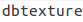

We provide the images (800 x 800) and the tiles (200 x 200) used in the paper in lossless format through a FTP service with username: rawfoot and password:

- Images - 2.2GB (rawfoot-images.tar).
- Tiles - 2.2GB (rawfoot-tiles.tar).
We provide also the original shots in RAW format as well as in lossless compressed png format. The size of the original RAW shots at full resolution is large: 34GB. Please note that internet connections at universities typically have a bandwidth of 1GB per 20 minutes (at best 0.5GB/min). So downloading may take a while.
- Raw Shots - 34GB (rawfoot-raw.tar).
- Png Shots - 33GB (rawfoot-full.tar).
If you use the collection for your research, please make a reference to:
- Claudio Cusano, Paolo Napoletano, and Raimondo Schettini. Evaluating color texture descriptors under large variations of controlled lighting conditions. JOSA A 33.1 (2016): 17-30. (pdf)